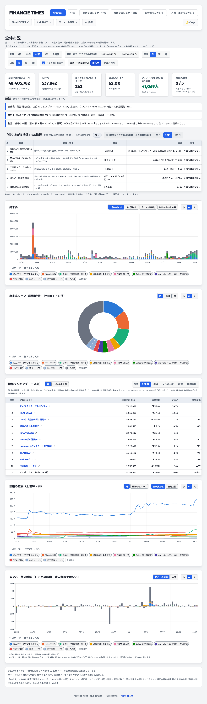
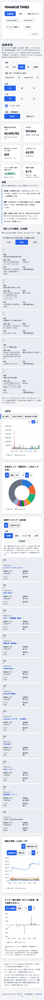

FiNANCiE TIMES Web ・ 全体市況と「分析」の合体 v3.2.0 ・ 2026-09-13 10:41 JST 時点
合体版はステージングで見られます。本番に出すかを決めてください
全体状況：タブは「全体市況」1つになり、上の操作帯が全部の図に効き、箱ごとに見せ方を切り替えられます。既定の背景は白です。
結論：検査は全部通り、ステージングに出しました。本番（GitHub Pages）には出していません。
ステージング：https://financie-times-analysis-staging.ruku-practice.workers.dev/financie/（右下が v3.2.0 なら最新）
検収：断（コード）・エマ（使いやすさ）は 確認中。結果はこの資料の下の「検収」に追記します。
選んでください
A 本番に出すおすすめ
断・エマが通したら
- 分析タブは消して出す（決裁6）
- 毎晩の処理に集計を足してから出す
- 残り3つは次の版で直す
B 残りを直してから出す
- 日付欄の「適用」釦
- ランキング表にシェアと期末直近30日の列
- KPI のメンバー純増を選んだ期間に
C もう少しステージングで使う
- 気になった所を溜めて、まとめて1回直す
- 本番は v3.1.1 のまま
次の一歩：ステージングを開いて、出来高の箱の「束（月次）」と、操作帯の「記録どおり」を押してみる → 社長室に「A」「B」「C」のどれかを一言。
画面イメージ（設計）と実際の画面



見せ方の切り替え方

| 箱 | 見せ方（最初＝既定） |
|---|---|
| 出来高 | 上位＋その他の積み上げ ／ 束（月次） ／ 合計＋7日平均 ／ 取引のあったPJ数 |
| シェア | 円 ／ 推移 ／ 束 |
| ランキング | 表 ／ 上位8の今と前 |
| 価格 | 円 ／ 最初の値＝100、選び方＝出来高上位 ／ 価格上位 |
| メンバー | 日ごとの純増 ／ 水準（全PJ合計と公式PJ） |
データの流れ

数字が変わる所（知っておいてほしいこと）
| 変わる所 | 中身 |
|---|---|
| 名寄せ | TEAM RED・肝高の山本商店・音夢パンダの3PJは前身の記録を含みます（409→406PJ）。個別ページは今の記録だけのままです |
| 欠測 | 既定は「ならす」。「記録どおり」にすると出来高は分析レポートと同じ数字になります（90日：ならす 48,405,782円／記録どおり 49,034,819円） |
| 期間と週 | 期間は暦日で数えます。週は期末を末尾にした7日で、先頭の7日に満たない日は週に入れません |
| 色 | 系列の色を検証済みの8色に替え、「その他」は斜線の見本で見分けます |
検査（担当が回した分）
| 検査 | 項目 | 結果 |
|---|---|---|
| 全体市況（既存・定義の変更を反映） | 80 | ALL PASS |
| 合体の画面（新規） | 17 | ALL PASS |
| 分析タブ（旧・残す間） | 57 | ALL PASS |
| 集計の式を実データで別実装と突き合わせ | 31 | ALL PASS |
| 集計の式の単体 | 15 | ALL PASS |
| 集計ファイルの中身 | 13 | ALL PASS |
| 日付別ランキングの並べ替え（全992日） | 8 | ALL PASS |
| 分析の部品の分離 | 6 | ALL PASS |
検収
| 誰が | 判定 | 要点 |
|---|---|---|
| 断（コード） | 確認中 | ― |
| エマ（使いやすさ・PC 1280／スマホ 390） | 確認中 | ― |
| Astra（設計のセカンドオピニオン） | 方向は OK | 重大6点を実装の前に「契約」として決めて反映済み |
決めた点（決裁の範囲で担当が選んだもの）
| テーマ・縦横の釦 | ヘッダー右に1つずつ（どのタブでも効くように） |
| 分析タブ | 中身をそのまま残す（全体市況の箱とは別に動く）。消すのは1か所 |
| 欠測の釦の文言 | 「ならす／記録どおり」＋左に「欠測・一斉変動の日」 |
| 見せ方の記憶 | 箱ごとに覚える（URL には入れない）。期間・欠測は URL に残る |
| 版 | v3.2.0 に1本化 |
まだやっていないこと
- 日付欄の「適用」釦（今は打ち終わると反映）
- ランキング表の「シェア」「期末直近30日」の列（分析の上位30表の吸収）
- KPI の「メンバー純増」を選んだ期間の値に（今は機運の窓の値）
- 毎晩の処理（daily.yml・metadata.yml）に集計と検査を足す＝本番に出す時
- 検査の追加分（通信の競合・古い URL・境界のデータ）の一部
正本：設計書 docs/2026-09-13_合体_設計.md・完了報告 company/logs/2026-09-13_FiNANCiE-TIMES-Web_分析タブ_完了報告.md（「合体」の節）・枝 feature/analysis-tab（b73daf84・未push）